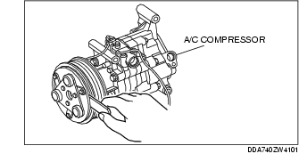
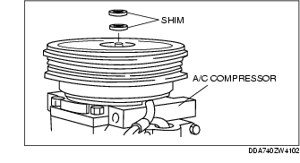

Magnetic clutch adjustment
1. Measure the clearance around the entire circumference between the pressure plate and A/C compressor pulley using a thickness gauge.

2. Verify that the clearance.
- • If not within the specification, remove the pressure plate and adjust the clearance by changing the shim (0.2 mm {0.008 in}, 0.5 mm {0.02 in}) or the number of shims.
